原视频：Bilibili · BV1Jg96BjE68（时长约 89 分钟） 课程：南京大学《操作系统原理》（2026）第 17 讲 整理说明：本书由视频语音转录后经 AI 重构而成；口语已转为书面语；关键时间点标注 (参考时间)，截图占位对应视频位置。
1. Learning from mistakes
(参考时间: 00:00)
并发 API 已齐：线程库 + 互斥 + 同步 + PV，理论上可以写任意并发程序。但人类被训练成「物理世界里视角很小的顺序执行者」，并发程序容易产生顺序幻觉；理解所有交错是 NP-hard 量级。
本讲 Learning from mistakes：真实并发 bug 长什么样、人类如何系统应对。
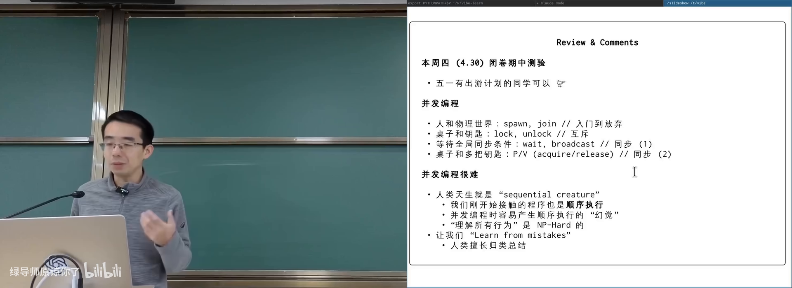
从顺序思维到并发幻觉在 B 站打开 (00:02:30)
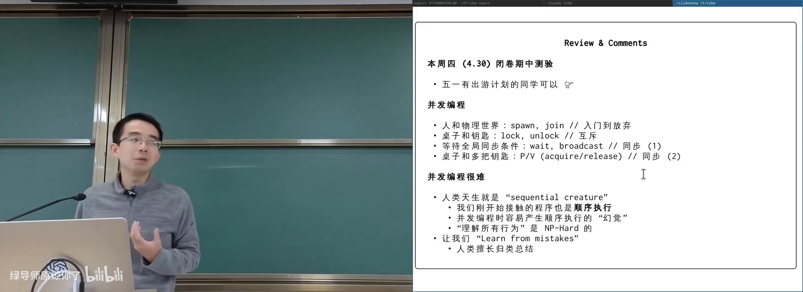
期中范围与并发 API 已齐在 B 站打开 (00:00:30)
图：可关注课程工具箱（spawn/lock/cond/PV）回顾。
2. 死锁
(参考时间: 00:02:50)
死锁（deadlock，一组线程互相等待对方持有的资源，全体无法继续）症状直观：程序「该结束却不结束」，日志突然静默。
2.1 AA 型
同一线程对同一把锁 lock 两次。若锁不可重入（non-recursive，第二次 acquire 会等自己释放），则永久阻塞。
课堂演示：lock(A); print; lock(A); print;——第二条 print 永不出现。
真实场景并非「十行玩具代码」：函数调用栈很深时，外层已持锁，信号处理/回调路径又试图 acquire 同一锁，即可形成 AA。
2.2 ABBA 型（最常见）
- T1：
lock(A)…lock(B) - T2：
lock(B)…lock(A)
交错后循环等待。哲学家就餐（各先拿左手叉子）是环形扩展版。
好消息：死锁相对容易观察（无进展 + gdb 看线程都阻塞在 lock）。
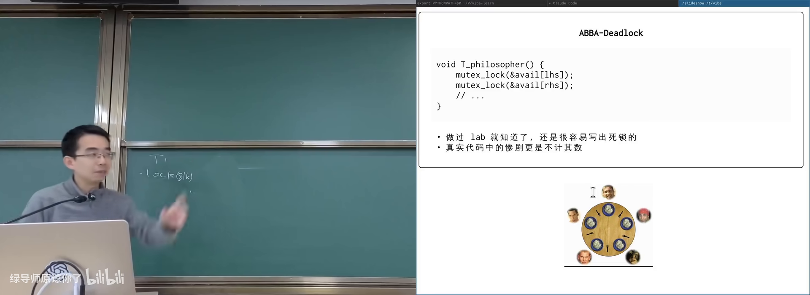
AA 与 ABBA 死锁在 B 站打开 (00:10:40)
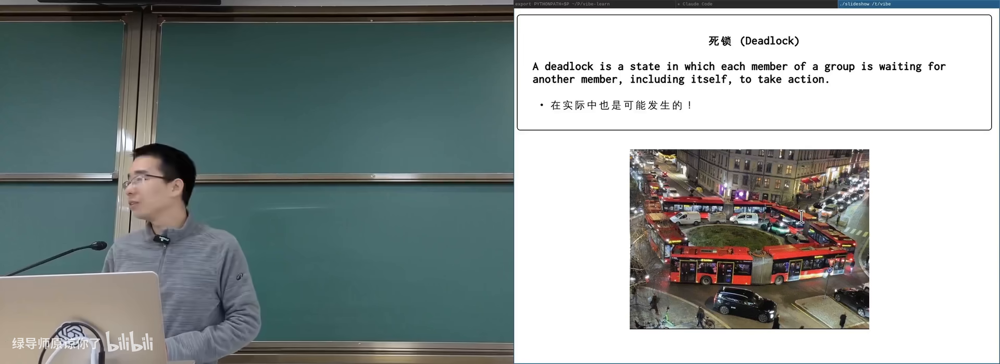
真实世界死锁：公交车头尾相接在 B 站打开 (00:03:10)
图：可关注「无人能 make progress」的物理类比。
flowchart LR
T1["T1 持有 A"] -->|等待 B| L2["锁 B"]
T2["T2 持有 B"] -->|等待 A| L1["锁 A"]
L1 -.-> T1
L2 -.-> T2
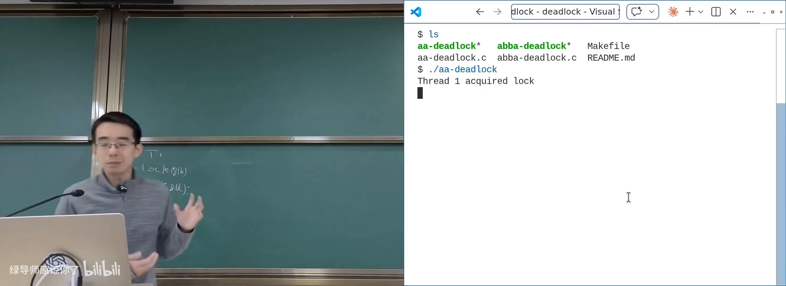
AA 演示：第二次 lock 卡死在 B 站打开 (00:06:20)
图：可关注第二条 print 未出现。
3. 死锁的四个必要条件
(参考时间: 00:12:30)
经典文献 System Deadlocks（1971）给出的必要条件：
| 条件 | 含义 | 打破难度 |
|---|---|---|
| Mutual exclusion | 资源互斥使用 | 颠覆锁定义 |
| Hold and wait | 已持有还想再要 | 大锁/事务 |
| No preemption | 不能抢走别人已持有的 | 需回滚 |
| Circular wait | 等待成环 | 工程上最可行 |
对四个条件的空话式复述（「设计时注意不要让它们成立」）没有操作性；真正有价值的是逐条思考会打开哪些技术分支：
- 违反互斥 → 消息传递 / master–worker，减少直接共享锁；
- 违反 hold-and-wait → 一把大锁；或 atomic 代码块 / 事务内存（all-or-nothing）；
- 违反 no-preemption → 抢锁必须回滚副作用，仍指向事务；
- 违反 circular wait → 锁顺序（lock ordering）。
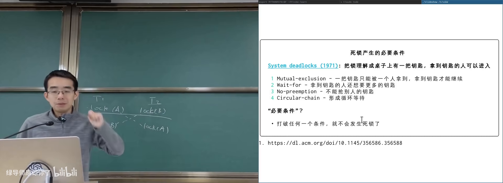
四个必要条件在 B 站打开 (00:13:30)
图：可关注每条对应的设计分支，而不是背名词。
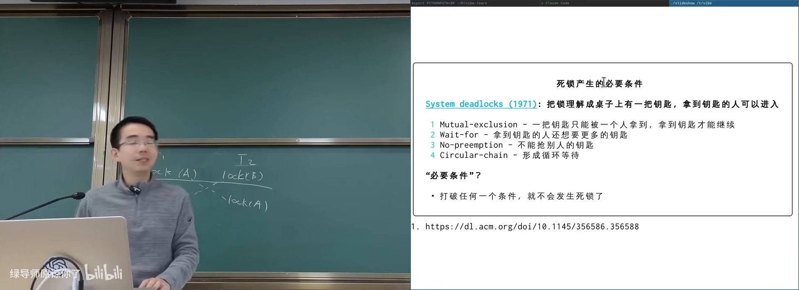
System Deadlocks 1971 经典论文在 B 站打开 (00:12:40)
图：可关注原始文献而非二手条目。
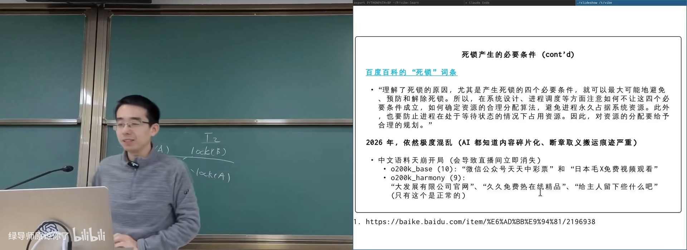
百科空话 vs 逐条件技术分析在 B 站打开 (00:16:00)
图：可关注「必要条件」应导向可实施机制。
3.1 lock ordering
给所有锁全局编号，强制从小到大获取。则任意时刻系统中必有线程持有「当前编号最大」的锁，它不必再等更大编号，可继续执行并最终释放——不会全体环等。
哲学家就餐中「有一人先拿右手叉子」即打破对称环。Linux 内核文档（如 rmap）明确写锁序。扩展到锁组：按组号排序，组内再保证顺序。
仍困难：静态证明程序满足锁序与 Rice 定理相关；文档与实现可能不一致（研究称相当比例 locking rule 文档过时）。
3.2 工程实践：假设程序员会写错
大型系统的防御性原则：做最坏假设。并发 bug 可能 99.999% 路径不触发，上线后亿级用户撞上罕见交错。
可落地手段：
- goto release 模式（C 内核风格）：所有错误路径跳到统一释放点，检查 buffer/锁是否归还；
- RAII：C++/Rust 作用域结束自动 unlock；
- 锁序检查器：
LD_PRELOAD覆盖 lock/unlock，记录线程锁获取顺序，维护等待图，发现新边导致成环即告警（lockdep 一类思路）。
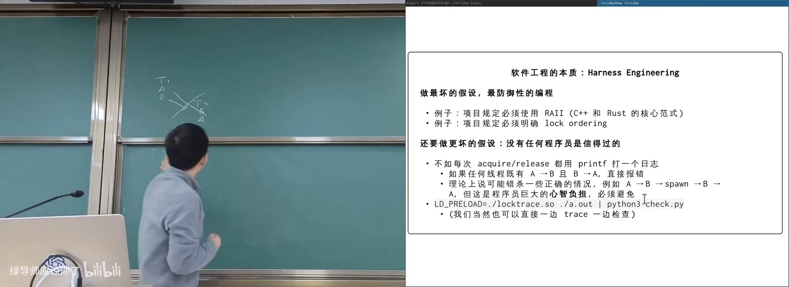
LD_PRELOAD 锁序追踪在 B 站打开 (00:39:00)
图：可关注「图中出现环 = 潜在 ABBA」。
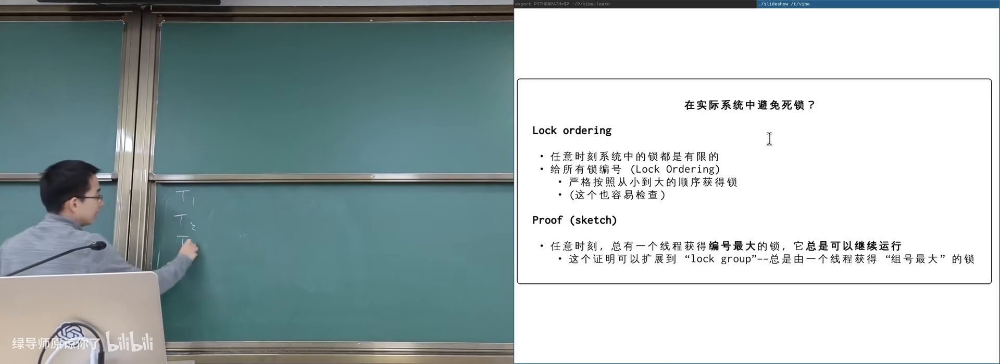
lock ordering：总有人持有最大编号锁在 B 站打开 (00:25:00)
图：可关注编号最大者仍可继续执行。
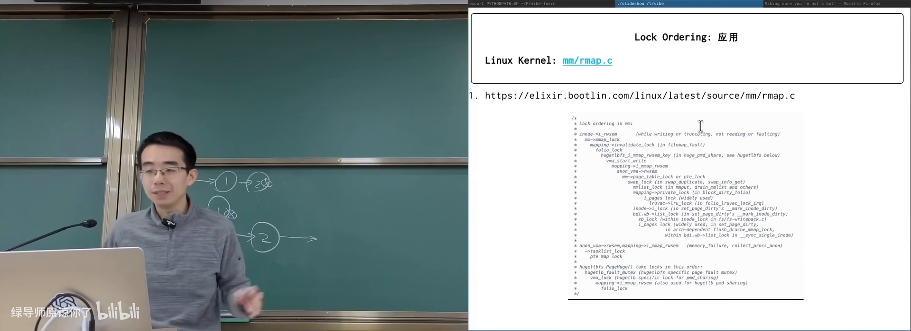
内核 lockdep / rmap 锁序文档在 B 站打开 (00:27:30)
图：可关注真实项目如何写明加锁顺序。
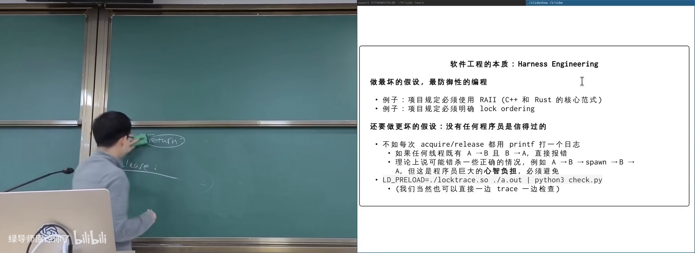
goto release 统一释放路径在 B 站打开 (00:32:30)
图：可关注错误路径不直接 return。
4. 数据竞争与更多并发 Bug
*(参考时间: 00:42:00 后半课）
4.1 数据竞争（data race）
两个以上线程访问同一内存、至少一个写、没有同步——C/C++ 中是未定义行为。它比「结果偶尔不对」更严重：编译器优化可删除/合并访存，使代码与源码字面意思都不再对应。
工具：ThreadSanitizer 等动态检查；规范上应靠锁或原子操作。
4.2 死锁之外的常见问题（课程后半归纳）
结合前文与并发实践，高频问题还包括：
- 遗漏/错锁：同一逻辑变量用两把锁；只在部分路径上锁；
- 优先级反转：低优先级持锁阻塞高优先级（实时系统经典）；
- 活锁：一直「有动作」但无进展（反复互相谦让）；
- 饥饿：个别线程长期拿不到锁；
- 性能型 bug：锁粒度过粗导致扩展性崩溃；
- 与 I/O/信号交叉：持锁时做慢系统调用或在信号里再加锁。
应对总纲仍是：
- 正确性优先（一把大锁 → 按测量拆分）；
- 条件写清楚（条件变量）/ 计数用信号量；
- 锁序 + 防御式释放；
- 工具与 harness（sanitizer、lockdep、持续压力测试）；
- 接受「测过 ≠ 无 bug」，为线上可观测性留钩子。
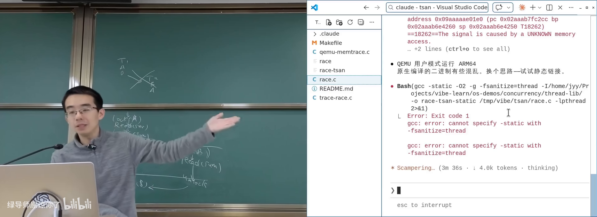
并发问题谱系在 B 站打开 (01:00:00)
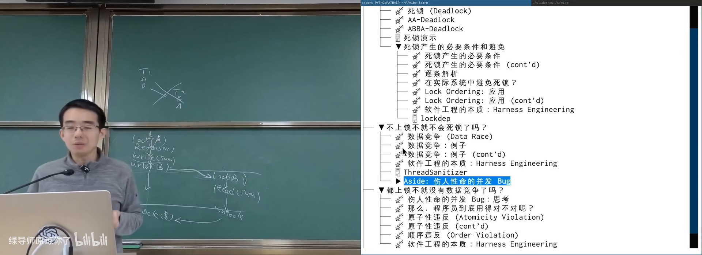
数据竞争：无同步访问共享内存在 B 站打开 (01:10:00)
图：可关注至少一写且无 happens-before。
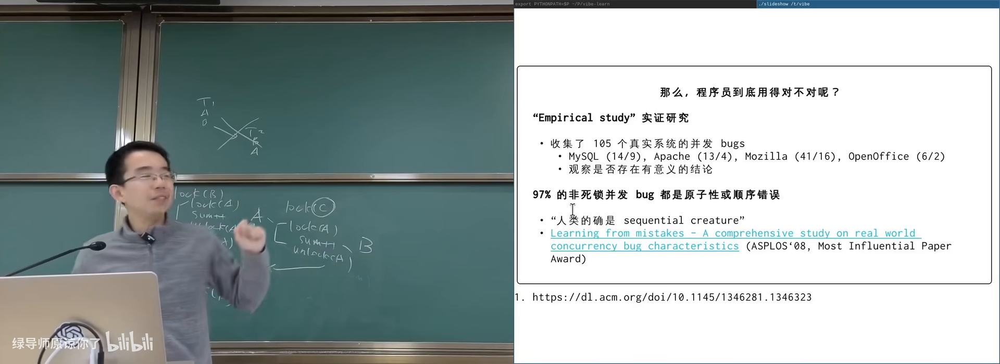
锁粒度与性能/正确性权衡在 B 站打开 (01:15:00)
图：可关注拆锁后 easy test 也可能变红。
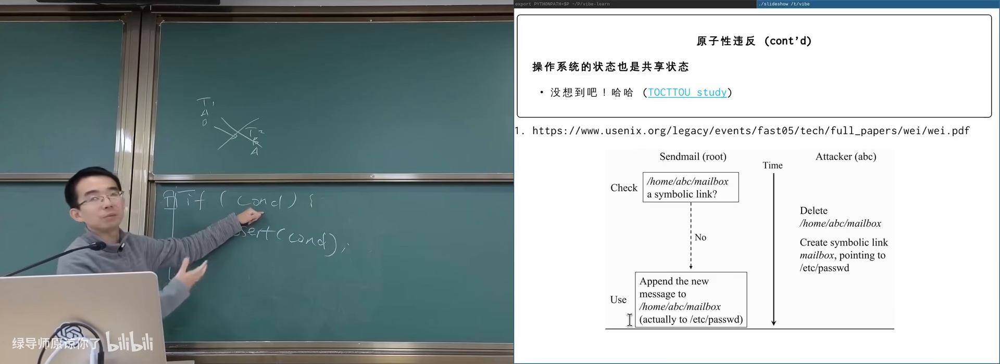
工具链：TSan / lockdep / 压力测试在 B 站打开 (01:20:00)
图：可关注「测过 ≠ 无 bug」的 harness 化思路。
附录：概念补给
死锁（deadlock）
- 是什么：多个线程互相等待，系统无进展。
- 课上为何出现：互斥的最著名代价。
- 和什么像：两车在窄巷互不相让。
AA 型死锁
- 是什么：同一线程重复获取同一把不可重入锁。
- 课上为何出现：最简单的死锁演示。
- 常见误解：「我不会写这么蠢」——深层调用+回调时很常见。
ABBA 型死锁
- 是什么：两线程以相反顺序获取两把锁。
- 课上为何出现：实际系统最常见形态。
- 和什么像：哲学家都先伸左手。
可重入锁 / 不可重入
- 是什么：同一线程能否多次 acquire 同一锁。
- 课上为何出现：决定 AA 是否立刻卡死。
- 和什么像：自家门钥匙能否再开自家门（取决于锁的设计）。
四个必要条件
- 是什么：互斥、占有并等待、不可抢占、循环等待。
- 课上为何出现：系统分析死锁的经典框架。
- 常见误解：背条文没用，要对每条问「怎么在系统里破坏它」。
lock ordering（锁顺序）
- 是什么：按全局编号顺序加锁，破坏循环等待。
- 课上为何出现：工程上最可操作的防死锁手段。
- 和什么像：规定只能从低号会议室开到高号。
lockdep / 锁序检查
- 是什么：运行时记录加锁顺序并在成环时告警的工具/机制。
- 课上为何出现：假设人会写错，用 harness 驾驭。
- 和什么像：仓库门禁：发现异常进出记录就报警。
数据竞争（data race）
- 是什么：无同步的冲突内存访问。
- 课上为何出现：并发 correctness 的底线问题。
- 常见误解：不是「偶尔读旧值」，而是语言层面 UB。
活锁 / 饥饿
- 是什么：持续动作却无进展 / 某线程长期得不到资源。
- 课上为何出现：死锁之外的进展性失败。
- 和什么像：走廊里两人反复侧身让行反而都过不去。
防御式编程 / harness engineering
- 是什么：假定代码会错，用模式与工具限制爆炸半径。
- 课上为何出现：并发与 AI 编程时代的通用工程态度。
- 和什么像：安全绳与护栏：不指望永不摔，而是摔了不断命。
goto release
- 是什么：C 代码中统一跳到资源释放路径的惯用法。
- 课上为何出现：降低「多 return 漏 unlock」概率。
- 常见误解：不是滥用 goto 写业务，而是错误路径收束。
RAII
- 是什么：作用域绑定资源生命周期，退出时自动释放。
- 课上为何出现：锁与内存的现代配对手段。
- 和什么像：借还自动记账的门禁系统。
ThreadSanitizer（TSan）
- 是什么：动态检测数据竞争的编译器插桩工具。
- 课上为何出现：race 难以靠肉眼与偶测发现。
- 和什么像：给共享文件装「同时改写」传感器。
书架 Shelf 流水线生成 · 内容衍生自 B 站公开课程视频 BV1Jg96BjE68